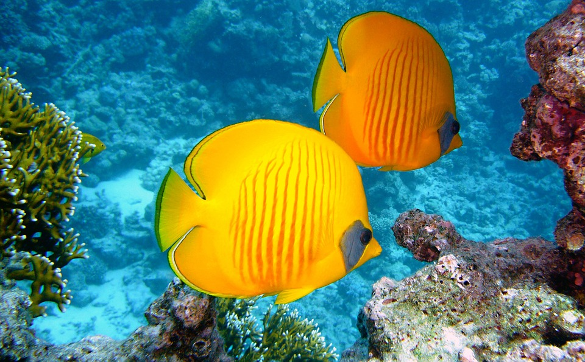

Why Use Us?
As a family owned business, our goal to ensure that you have the best experience in our store. We want you to be able to find the perfect pet to add to your family because we know how much family means. We strive to provide our customers with all of their pet related wants and needs, always listening to your ideas for new products or pets to be brought to our store. Our store may look small from the outside, but the experience you will have inside with our extremely well-trained staff will be nothing short of fantastic!
